@CBSNews
📝 原文: Hunter Biden says his father's cancer has spread: "It's very painful and it's very debilitating"
🇨🇳 译文: 亨特·拜登说他父亲的癌症已经扩散：“这非常痛苦，而且非常虚弱”

🕒 2026-08-09T01:34:51+00:00
| 来源 | 旧窗口内数量 | 本次新增 | 本次淘汰 | 当前窗口内共有 |
|---|---|---|---|---|
| 推文 + Dawn 新闻 | 0 | 52 | 0 | 52 |
| ARY News | 0 | 0 | 0 | 0 |
注：淘汰数 = 旧窗口内数量 + 本次新增 - 当前窗口内共有


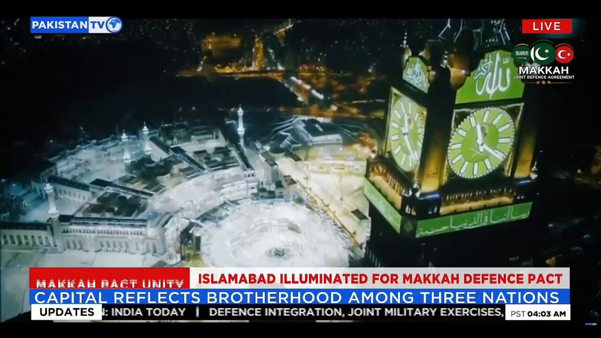

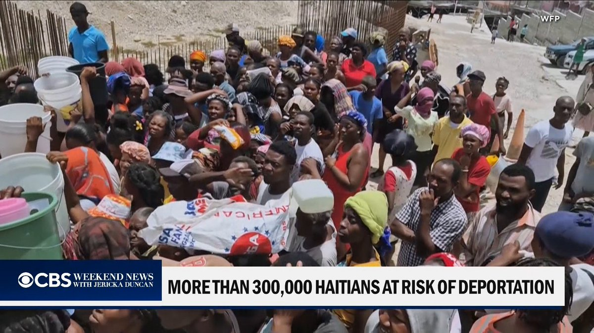
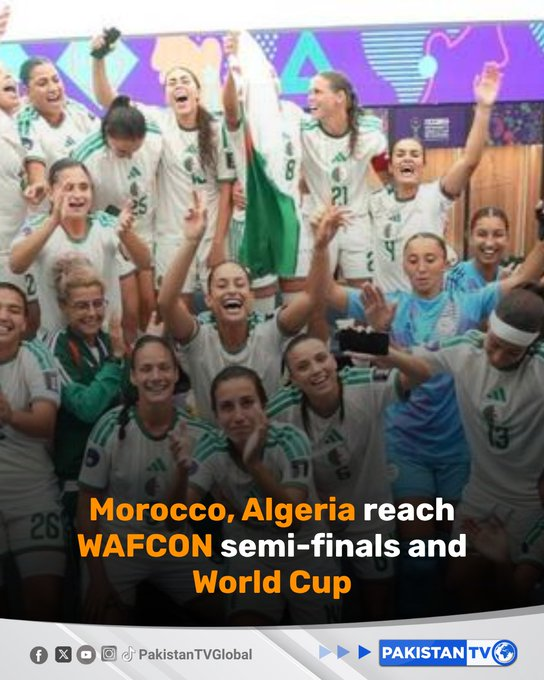
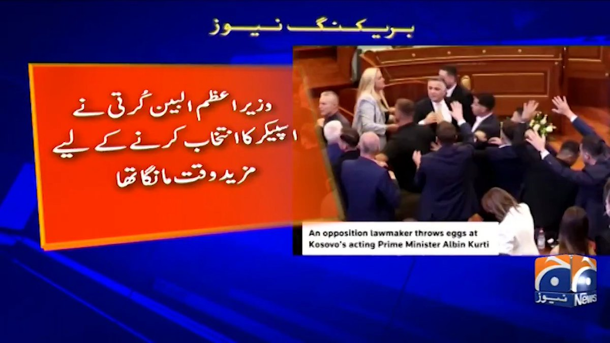
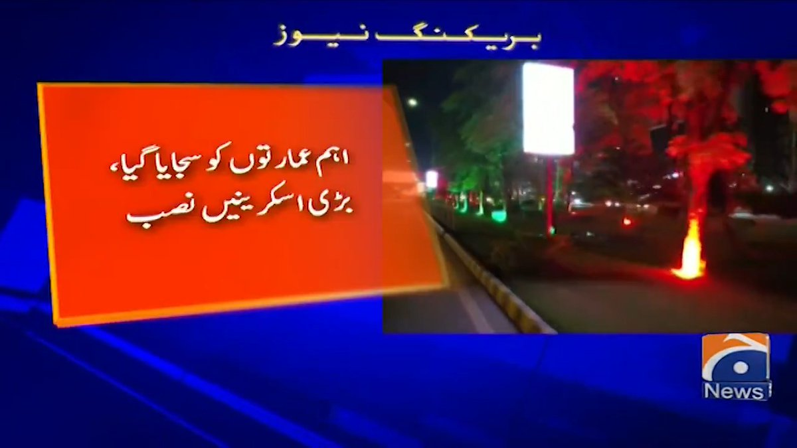
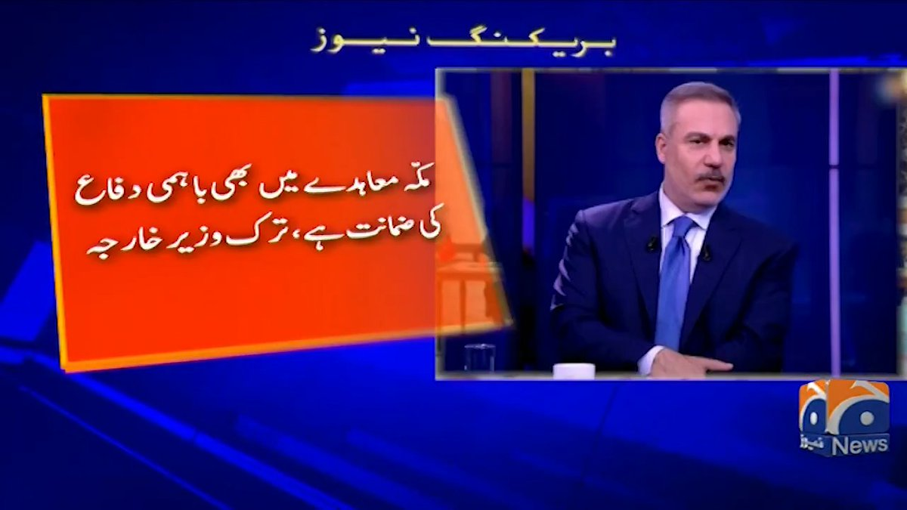
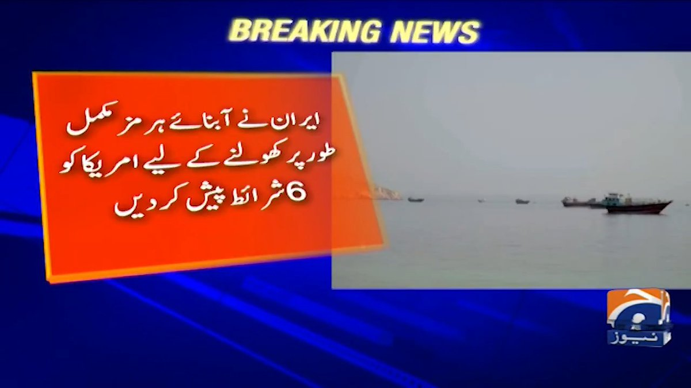


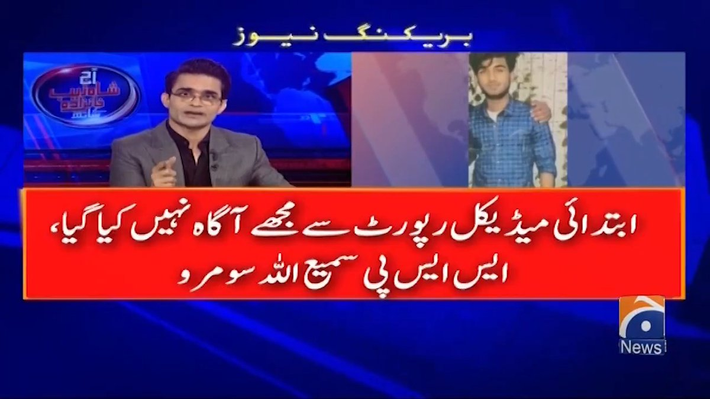
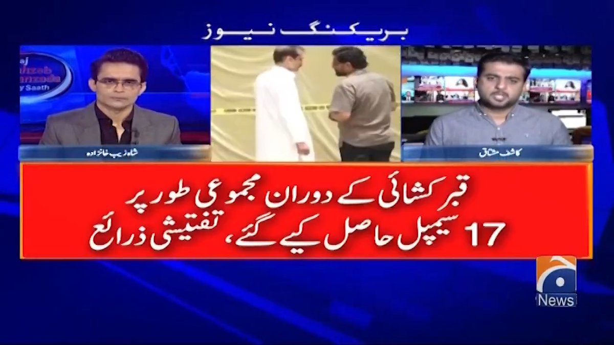
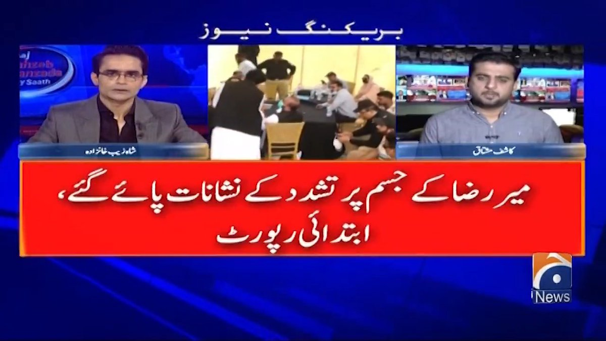

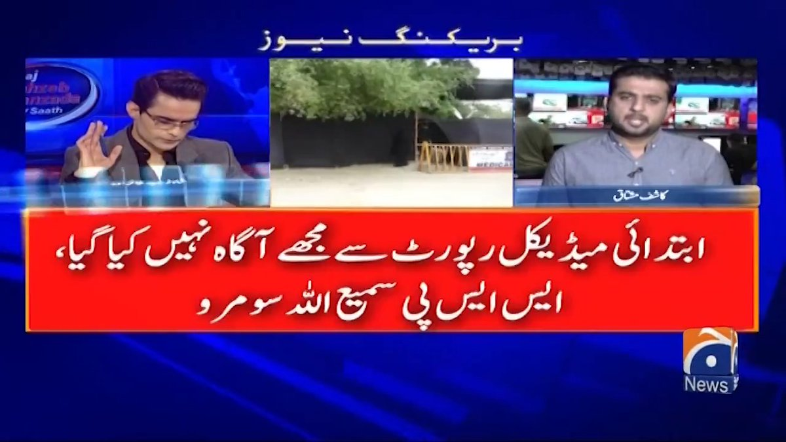
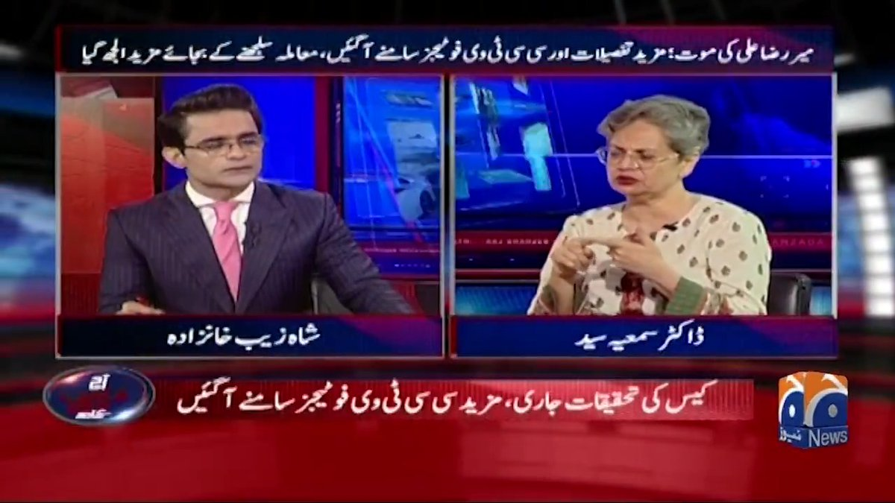
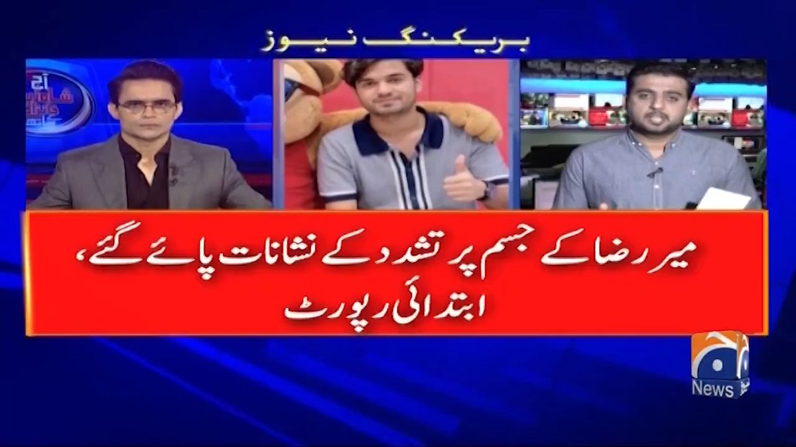